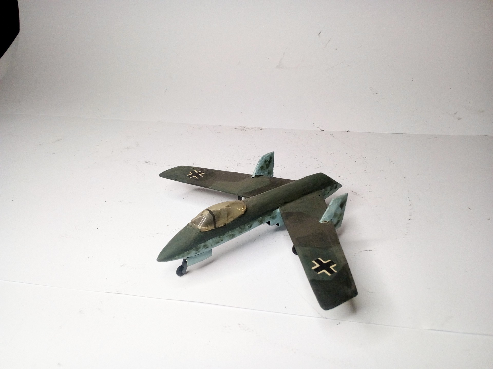
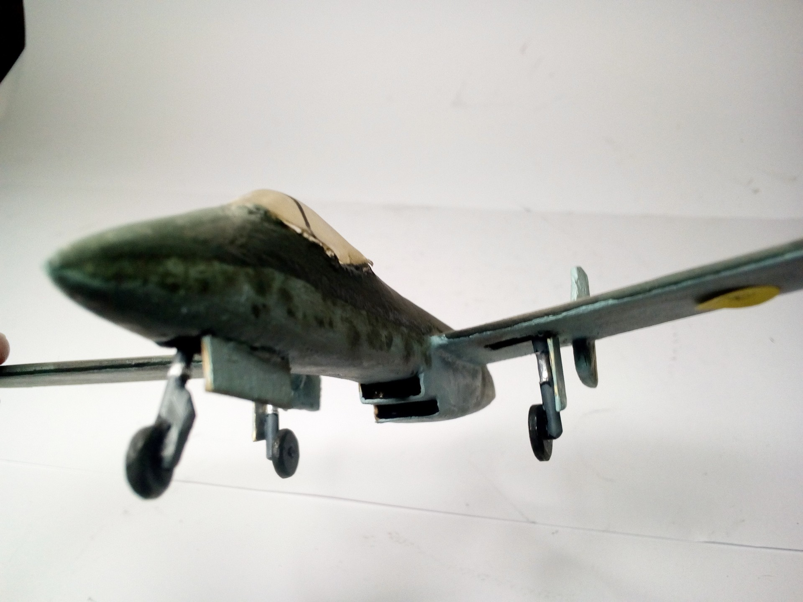
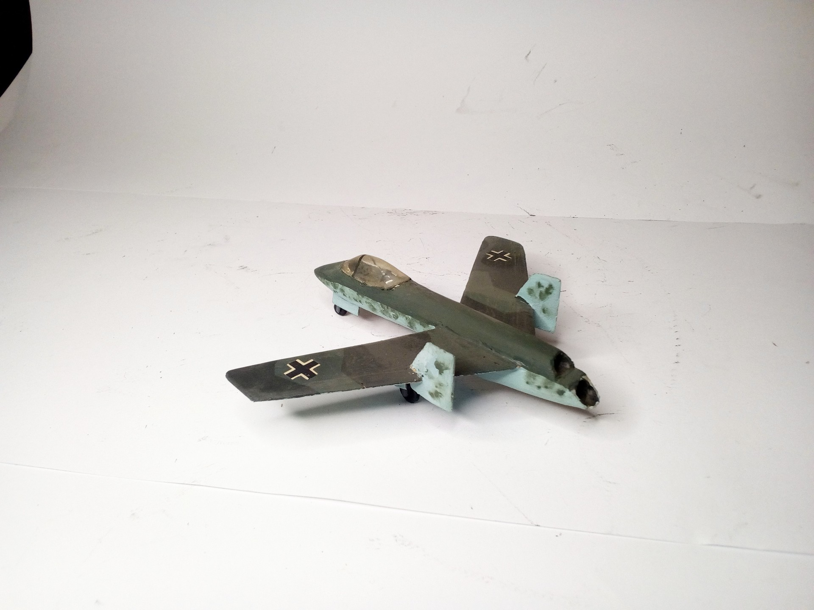
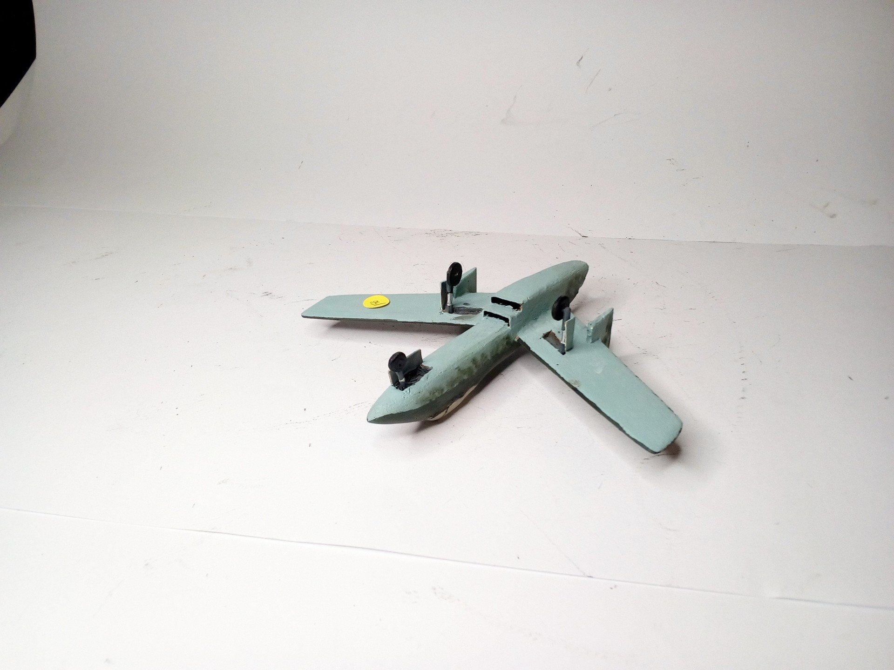

Aerei · scale model archive
Scratch built balsa model of a fictitious Luft46 jet fighter (dreamt)
Scratch built balsa model of a fictitious Luft46 jet fighter (dreamt) — Kit: scratchbuilt, Scale: 1/72. #scratchbuild #1/72

Photo gallery



English description
#scratchbuild #1/72